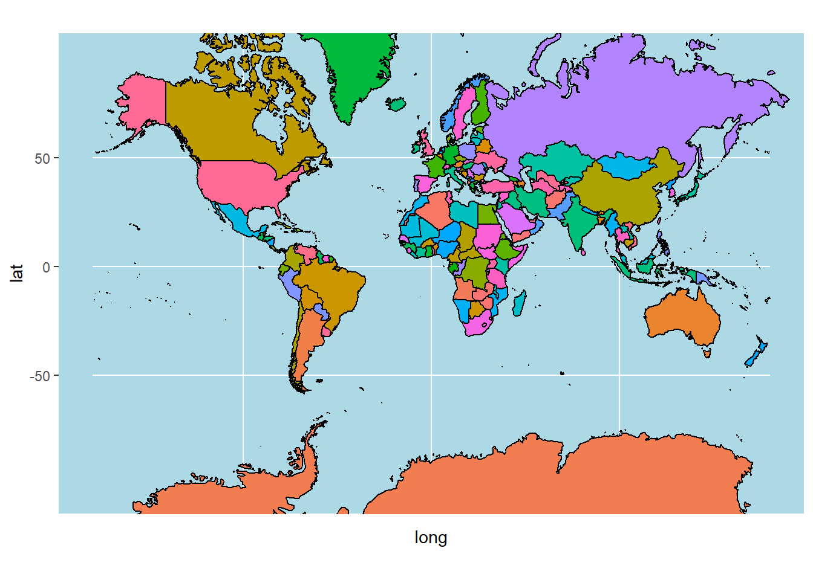
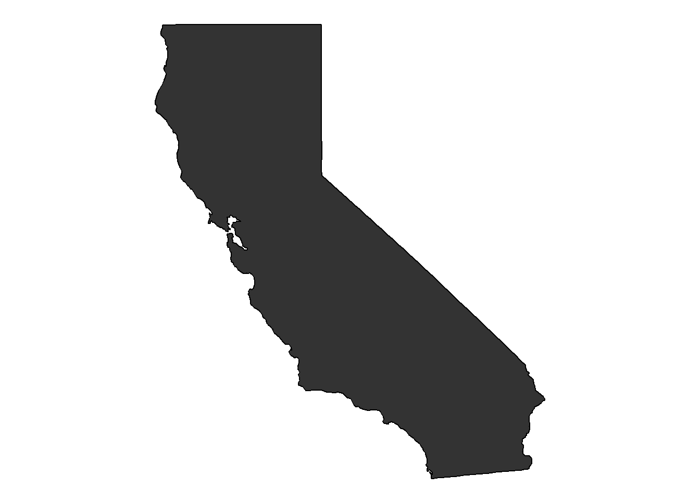
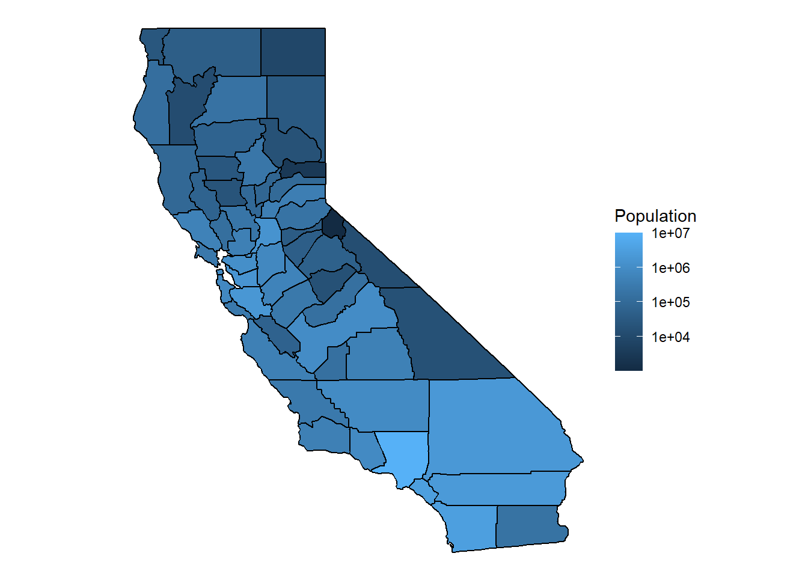
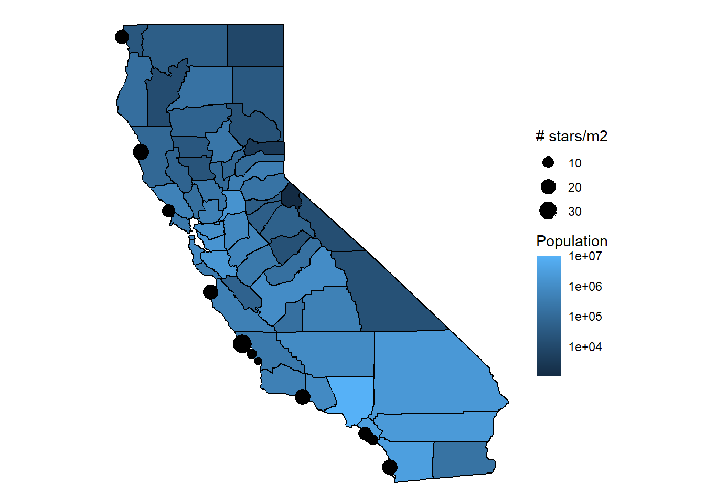
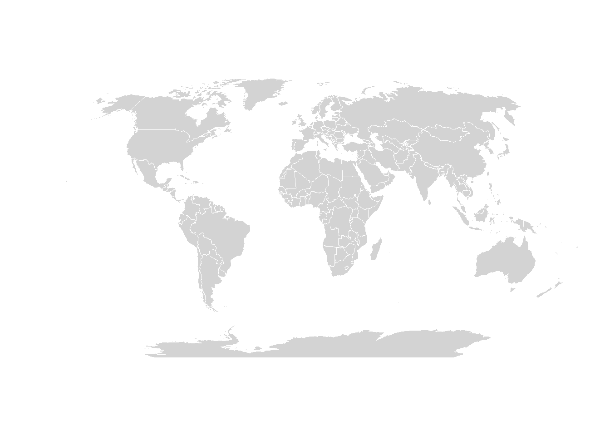

## Load libraries
library(tidyverse)
library(here)
library(maps)
library(mapdata)
library(mapproj)
library(fishualize)
library(praise)Learning Mapping in Week 7
Load libraries and read in data to utilize in this week’s class
## Read in data
# Population in California by county
popdata <- read_csv(here("Week_07", "Data", "CAPopdata.csv"))Rows: 58 Columns: 2
── Column specification ────────────────────────────────────────────────────────
Delimiter: ","
chr (1): County
dbl (1): Population
ℹ Use `spec()` to retrieve the full column specification for this data.
ℹ Specify the column types or set `show_col_types = FALSE` to quiet this message.# Seastar counts at field sites in California
stars <- read_csv(here("Week_07", "Data", "stars.csv"))Rows: 14 Columns: 3
── Column specification ────────────────────────────────────────────────────────
Delimiter: ","
dbl (3): lat, long, star_no
ℹ Use `spec()` to retrieve the full column specification for this data.
ℹ Specify the column types or set `show_col_types = FALSE` to quiet this message.# View data
view(popdata)
view(stars)Practice with pulling map polygon boundaries and creating a map
# Pull map polygon boundaries for the world
world <- map_data("world")
# Make a map of the world
ggplot()+
geom_polygon(data = world,
aes(x = long, y = lat,
group = group,
fill = region),
color = "black") +
guides(fill = "none") +
theme(panel.background =
element_rect(fill = "lightblue")) +
coord_map(projection = "mercator",
xlim = c(-180,180))
# Yay, I made a map!
praise()[1] "You are praiseworthy!"Practice making a state map
## Filter states dataset to California
states <- map_data("state")
CA_data <- states |>
filter(region == "california")
view(CA_data)
## Make a map of California
ggplot()+
geom_polygon(data = CA_data,
aes(x = long, y = lat,
group = group),
color="black")+
coord_map()+
theme_void()
Figure 1 shows a simple map of California. Next, we are going to add some data onto the map.
Practice adding data onto a map
In this section, we are adding county population data to our map. First, we need to pull county data and check the population data.
## Pull county polygon data for California
counties <- map_data("county")
head(counties)[1:3,] long lat group order region subregion
1 -86.50517 32.34920 1 1 alabama autauga
2 -86.53382 32.35493 1 2 alabama autauga
3 -86.54527 32.36639 1 3 alabama autaugahead(popdata)# A tibble: 6 × 2
County Population
<chr> <dbl>
1 los angeles 10081570
2 san diego 3316073
3 orange 3168044
4 riverside 2411439
5 san bernardino 2149031
6 santa clara 1927470Next, we need to make the column names of the county and population data match in order to join them.
## Create dataframe with population and county data in California using renaming and joining
CApop_county <- popdata |>
select("subregion" = County, Population) |> # Rename columns to match counties
inner_join(counties) |>
filter(region == "california") # Make sure it reads only counties from California, since some county names repeat in other statesJoining with `by = join_by(subregion)`head(CApop_county)# A tibble: 6 × 7
subregion Population long lat group order region
<chr> <dbl> <dbl> <dbl> <dbl> <int> <chr>
1 los angeles 10081570 -119. 34.8 175 7827 california
2 los angeles 10081570 -118. 34.8 175 7828 california
3 los angeles 10081570 -118. 34.8 175 7829 california
4 los angeles 10081570 -118. 34.6 175 7830 california
5 los angeles 10081570 -118. 34.6 175 7831 california
6 los angeles 10081570 -118. 34.5 175 7832 californiaNow that we have our joined data of population and counties within California, we will make a map of California with the dataframe we just created.
## Create a map of California with population by county
ggplot() +
geom_polygon(data = CApop_county,
aes(x = long, y = lat,
group = group,
fill = Population),
color = "black") +
coord_map() +
theme_void() +
scale_fill_gradient(transform = "log10") # Use log10 to compress the color scale so less-populated counties are still visible alongside Los Angeles
## What a fun map!
praise()[1] "You are stunning!"Next, we are going to take this map we just created and layer points of seastar data on top.
## Look at seastar dataset
head(stars)# A tibble: 6 × 3
lat long star_no
<dbl> <dbl> <dbl>
1 33.5 -118. 10
2 35.5 -121. 1
3 39.5 -124. 25
4 32.9 -117. 22
5 33.5 -118. 8
6 33.5 -118. 3## Use same map from the previous step and add sea star data
ggplot() +
geom_polygon(data = CApop_county,
aes(x = long, y = lat,
group = group,
fill = Population),
color = "black") +
geom_point(data = stars,
aes(x = long,
y = lat,
size = star_no)) +
coord_map() +
theme_void() +
scale_fill_gradient(transform = "log10") +
labs(size = "# stars/m2")
## Save the map
ggsave(here("Week_07","Outputs","CApop.pdf"))Saving 7 x 5 in imageThe seastar dataset shows seastar counts (per m2) at field sites in Califonia.
Now that we have learned how to create basic maps using the maps package, we will learn about the sf and rnaturalearth packages!
library(sf)Linking to GEOS 3.12.1, GDAL 3.8.4, PROJ 9.3.1; sf_use_s2() is TRUElibrary(rnaturalearth)Warning: package 'rnaturalearth' was built under R version 4.4.3library(rnaturalearthdata)Warning: package 'rnaturalearthdata' was built under R version 4.4.3
Attaching package: 'rnaturalearthdata'The following object is masked from 'package:rnaturalearth':
countries110## Call in world map in sf
world_sf <- ne_countries(scale = "medium",
returnclass = "sf")
## Make a map in sf
ggplot(world_sf) +
geom_sf(fill = "lightgray",
color = "white") +
coord_sf(crs = "+proj=robin") +
theme_void()
Pau with learning about how to make basic maps!